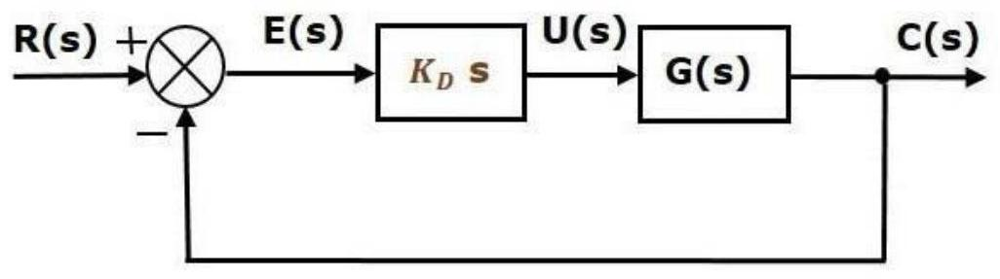

Unit-6: Feedback Characteristics of Control Systems
Controllers
The various types of controllers are used to improve the performance of control systems. In this chapter, we will discuss the basic controllers such as the proportional, the derivative and the integral controllers.
Proportional Controller
The proportional controller produces an output, which is proportional to error signal.
Apply Laplace transform on both the sides -
Therefore, the transfer function of the proportional controller is $K_P$.
Where,
U(s) is the Laplace transform of the actuating signal u(t)
E(s) is the Laplace transform of the error signal e(t)
$K_P$ is the proportionality constant
The block diagram of the unity negative feedback closed loop control system along with the proportional controller is shown in the following figure.
The proportional controller is used to change the transient response as per the requirement.
Derivative Controller
The derivative controller produces an output, which is derivative of the error signal.
Apply Laplace transform on both sides.
Therefore, the transfer function of the derivative controller is $K_D s$.
Where, $K_D$ is the derivative constant.
Therefore, the transfer function of the derivative controller is $K_D s$.
Where, $K_D$ is the derivative constant.
The block diagram of the unity negative feedback closed loop control system along with the derivative controller is shown in the following figure.
The derivative controller is used to make the unstable control system into a stable one.
Integral Controller
The integral controller produces an output, which is integral of the error signal.
Apply Laplace transform on both the sides -
Therefore, the transfer function of the integral controller is $K_I/s$.
Where, $K_I$ is the integral constant.
The block diagram of the unity negative feedback closed loop control system along with the integral controller is shown in the following figure.
The integral controller is used to decrease the steady state error.
Let us now discuss about the combination of basic controllers.
Proportional Derivative (PD) Controller
The proportional derivative controller produces an output, which is the combination of the outputs of proportional and derivative controllers.
Apply Laplace transform on both sides -
Therefore, the transfer function of the proportional derivative controller is $K_P+K_D s$
The block diagram of the unity negative feedback closed loop control system along with the proportional derivative controller is shown in the following figure.
The proportional derivative controller is used to improve the stability of control system without affecting the steady state error.
Proportional Integral (PI) Controller
The proportional integral controller produces an output, which is the combination of outputs of the proportional and integral controllers.
Apply Laplace transform on both sides -
Therefore, the transfer function of proportional integral controller is $K_P+ K_I/s$.
The block diagram of the unity negative feedback closed loop control system along with the proportional integral controller is shown in the following figure.

The proportional integral controller is used to decrease the steady state error without affecting the stability of the control system.
Proportional Integral Derivative (PID) Controller
The proportional integral derivative controller produces an output, which is the combination of the outputs of proportional, integral and derivative controllers.
Apply Laplace transform on both sides -
Therefore, the transfer function of the proportional integral derivative controller is $K_P+K_I/s+K_D s$
The block diagram of the unity negative feedback closed loop control system along with the proportional integral derivative controller is shown in the following figure.
The proportional integral derivative controller is used to improve the stability of the control system and to decrease steady state error.